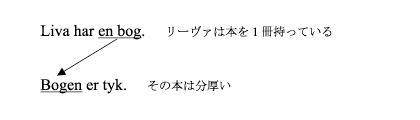
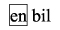
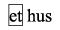
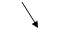
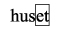

―既知形とは？―
既知形というのは，すでに見聞きするなどして分かっているものや，あるいは会話の場面に登場しているものを指して言うときなどに使われる形です．
次の例文を見てみましょう．

［tyk：太い；厚い］
ある名詞が会話において初めて出てくる場合，上で見た「未知形」が使われます．そしてその名詞について，再び言及するときには，「既知形」を使います．
Jeg har en lommeregner i tasken. 私はバッグの中に計算機を持っています
これはスキット内で使われている文です．スキット内では，話し手であるジュンコにとっても，聞き手であるリーヴァにとっても，tasken ＜(その)バッグ＞ が，ジュンコが身に着けているバッグのことを指しているのは明らかです．このような場合にも，「既知形」を使います．
―単数既知形の作り方―
名詞に不定冠詞en / et が付いた形，単数未知形については，上で学びました．ここでは，この単数未知形を単数既知形に変えてみましょう．
単数未知形 |
 |
 |
|  | ||
単数既知形 |
|
 |
不定冠詞のenとetが名詞の後ろにくっついた感じに見えますが，不定冠詞en / etと既知形語尾の –en / -etは発音が異なります．注意してください．
それでは，上で学んだ名詞の単数既知形を見てみましょう．
共 性 名 詞 |
|
単数未知形 |
単数既知形 |
en bil ＜自動車＞ |
bilen |
en blomst ＜花＞ |
blomsten |
en blyant ＜鉛筆＞ |
blyanten |
en bog ＜本＞ |
bogen |
en bus ＜バス＞ |
bussen 注意！ |
en dreng ＜男の子＞ |
drengen |
en kop ＜カップ＞ |
koppen 注意！ |
en pige ＜女の子＞ |
pigen 注意！ |
en ske ＜スプーン＞ |
skeen 注意！ |
中 性 名 詞 |
|
単数未知形 |
単数既知形 |
et bord ＜テーブル＞ |
bordet |
et brev ＜手紙＞ |
brevet |
et glas ＜グラス；コップ＞ |
glasset 注意！ |
et hus ＜家＞ |
huset |
et kort ＜地図＞ |
kortet |
et træ ＜木＞ |
træet |
et vindue ＜窓＞ |
vinduet 注意！ |
et æble ＜りんご＞ |
æblet 注意！ |
et fly ＜飛行機＞ |
flyet |
注意！
―-eで終わる名詞―
2音節以上の語で，-eで終わる名詞の場合，-n / -t だけを付け加えて単数既知形を作ります．
en pige |
pigen |
et æble |
æblet |
et vindue |
vinduet |
補足：en skeは1音節語なので，-eで終わっていてもskeenと-enを付け加えます．
―同じ子音字を2回綴らなければならない名詞―
語末の音節が｛短母音＋子音｝となる名詞は，単数既知形を作るときに語末の子音字を重ねます．
en bus |
bussen |
en kop |
koppen |
et glas |
glasset |